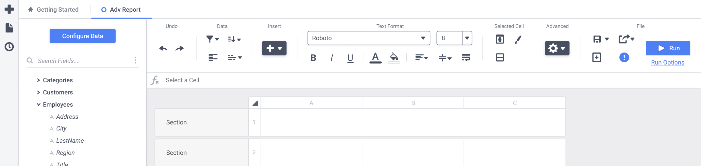
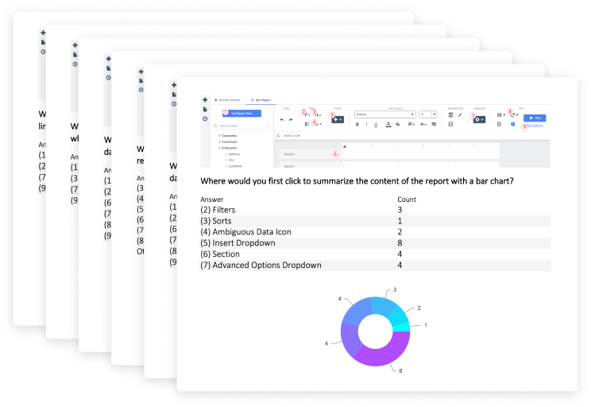
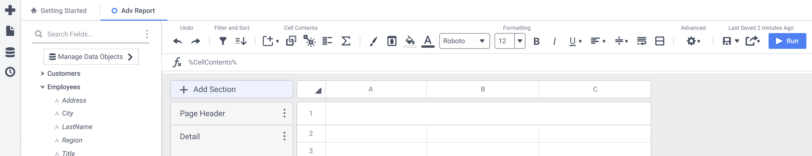

A Fresh Coat of Paint

The outdated report builder interface.

The redesigned grid interface.
I modernized the look while keeping it clean and professional. I also introduced signifiers for previously hidden, important actions that user's failed to find during usability testing.
Fast and Familiar Interaction Design
We updated the interactions to match Microsoft Excel and Google Sheets as well as built a new, faster way to add cells by dragging content from one area to another.
Jakob's Law states that users spend most of their time on other sites, therefore, users prefer your site to work the same way.
Clean and Responsive Report Viewing
The highest-trafficked page needs to be simple, easy to use, and flexible for all users.

Three Egregious Points of Friction
1. The Forced Wizard Workflow
The application forced people through a set up process before they could start building a report. When someone clicks the button to create a new report, they are transported here:

This was a bloated, ugly starting point that left people feeling underwhelmed and confused. People expected to start playing with a new shiny reporting toy, but instead they were thrown into an unnatural workflow.
We stripped the five-step wizard down to a single dialog, saving people an estimated 17 seconds every time they build a report.

The new dialog sits on top of the design interface, creating a fast and simple experience that oriented users and helped them anticipate the next screen.
2. A Desire Path Blocked by an Error State
New and experienced users alike would run into an annoying error over and over, indicating a “desire path.” A Desire Path is the most intuitive, fastest, or most common path for a user to get from A to B, despite it not being designed that way. Because of a technical limitation, we were not able to fully eliminate the step causing people to get into the error state, but we were able to integrate it into the workflow and prevent the error.

The old workflow is shown on the left and the new, streamlined workflow is shown on the right.
3. The Information Architecture
I watcched people spend lots of time trying to locate options. They would end up hovering over every single icon before finding what they were looking for.
The most important options for building reports were hidden under a single icon, amongst many other less important icons.
I worked on bringing the options people use for nearly every report to the top level and introduced labels to make the toolbar easy to scan.

First-Click Testing
Regardless of the fact that I had no allocated time for research, I was sensitive to those with years of muscle memory. I knew I had to find a way to test the information architecture - and my chance came when I was offered the opportunity to present at Exago’s client conference. I used my presentation to a facilitate a first-click test over zoom. I displayed an image of the proposed design and asked, "Where would you first click to ..." questions where people answered via a poll.
Ironically, I used the report designer to analyze and share the test results:

This was an exciting moment for me, I successfully received over twenty responses with a total time investment of three hours - including the time it took to craft the test. On top of that, my presentation was rated the highest of eight speakers based on a post-conference survey.
Ultimately, this was final design for the information architecture:

After redesigning the grid interface, information architecture, and core workflows, the final product was much improved from the original.